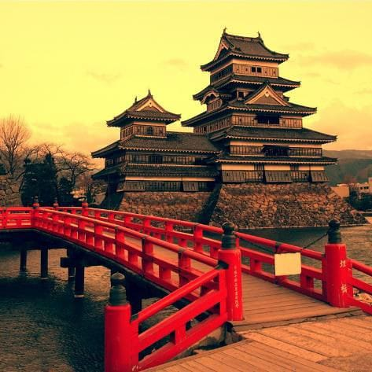

Kastil Matsumoto

Kastil Matsumoto adalah kastil bersejarah yang terletak di kota Matsumoto, Prefektur Nagano, Jepang. Kastil ini terkenal dengan dindingnya yang berwarna hitam, yang membuatnya dijuluki "Kastil Gagak". Kastil Matsumoto adalah salah satu dari tiga kastil bersejarah penting yang ada di Jepang, bersama dengan Kastil Kumamoto dan Kastil Himeji.
Kastil Matsumoto dibangun pada tahun 1593 oleh daimyo Tokugawa Ieyasu. Kastil ini awalnya dibangun sebagai benteng pertahanan selama masa perang, tetapi sekarang menjadi salah satu atraksi wisata paling populer di Jepang.
Kastil Matsumoto terdiri dari lima tingkat, dengan tiga menara utama dan kubah kastil. Kastil ini dikelilingi oleh parit dan tembok pertahanan. Di dalam kastil, wisatawan dapat melihat berbagai peninggalan sejarah, termasuk senjata, armor, dan furnitur.